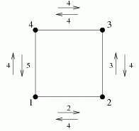

输入：第一行为两个用空格隔开的整数n（2<=n<=1000），m(1<=m<=2000)，接下来读入m行由空格隔开的4个整数a，b（1<=a,b<=n,a<>b），c，d(1<=c,d<=1000)，表示第i+1行第i座桥连接小岛a和b，从a到b承受的风力为c，从b到a承受的风力为d。
YYD为了减肥，他来到了瘦海，这是一个巨大的海，海中有n个小岛，小岛之间有m座桥连接，两个小岛之间不会有两座桥，并且从一个小岛可以到另外任意一个小岛。现在YYD想骑单车从小岛1出发，骑过每一座桥，到达每一个小岛，然后回到小岛1。霸中同学为了让YYD减肥成功，召唤了大风，由于是海上，风变得十分大，经过每一座桥都有不可避免的风阻碍YYD，YYD十分ddt，于是用泡芙贿赂了你，希望你能帮他找出一条承受的最大风力最小的路线。
输入：第一行为两个用空格隔开的整数n（2<=n<=1000），m(1<=m<=2000)，接下来读入m行由空格隔开的4个整数a，b（1<=a,b<=n,a<>b），c，d(1<=c,d<=1000)，表示第i+1行第i座桥连接小岛a和b，从a到b承受的风力为c，从b到a承受的风力为d。
输出：如果无法完成减肥计划，则输出NIE，否则第一行输出承受风力的最大值（要使它最小)
4 4
1 2 2 4
2 3 3 4
3 4 4 4
4 1 5 4

4
注意：通过桥为欧拉回路